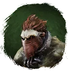
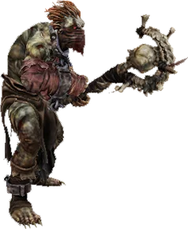
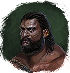

Открыть в интерактивной вики →

| Уровень | 55 |
|---|---|
| Прокачка | нет |
| Ранг в стае | 4 |
| Здоровье | 1500 |
| Мана | 1400 |
| Выносливость | 700 |
| Статистика | Уровень: 55, ранг: 4, здоровье: 1500, мана: 1500, выносливость: 600 |
Цена
15  Империал
Империал
ИмпериалГде взять
Покупается у Работорговца

РаботорговецНавыки

Доп. информация
Требуемый уровень: 55
Цена: 35 империалов
Покупка: у Работорговца
Может получать опыт — НЕТ
Описание
 | Благодаря умению лечить Коновал — надёжная поддержка в походе. Может вылечить всех союзников разом, а если надо — и сам атакует. Атакует издалека и ментально. Использует: Лечение, Групповое лечение, Корень, Осы, Шаровая молния. | |